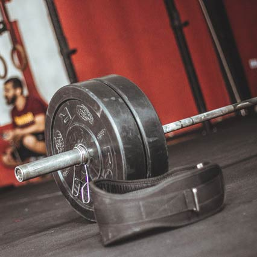

<!--
  Generated template for the DetallejercicioPage page.

  See http://ionicframework.com/docs/components/#navigation for more info on
  Ionic pages and navigation.
-->
<ion-header>
  <ion-navbar color="tabss">
    <ion-title>{{item.nombre}}</ion-title>
    <ion-buttons end>
      <button ion-button icon-only color="royal" *ngIf="item.rol; else botguardar"  (click)="editar(item)">
           <ion-icon name="paper"></ion-icon> 
        </button>
      <ng-template #botguardar>
          <button ion-button icon-only color="royal" (click)="guardarset()">
              <ion-icon name="md-checkmark"></ion-icon>
          </button>
      </ng-template>
    </ion-buttons>
  </ion-navbar>
</ion-header>
<ion-content >
        <ion-slides pager >
            <ion-slide >
                
                <ng-template #elseBlock>
                    
              </ng-template>
            </ion-slide>
            <ion-slide *ngIf="item.imagen1">
                
            </ion-slide>
            <ion-slide *ngIf="item.linkyoutube!='' && item.linkyoutube; " class="video">
                <iframe width="100%" height="250px"  [src]="youtubeaux" frameborder="0" allow="accelerometer; encrypted-media; gyroscope; picture-in-picture" allowfullscreen></iframe>
            </ion-slide>
          </ion-slides>
          <p>
              <span class="bold">Tipo :</span>   {{item.tipo}}
          </p>
          <p>
            <span class="bold">Instrucciones :</span>  {{item.deslarga}}
          </p>
          <ion-list>
            <ion-grid  class="tabla" *ngIf="itemcompleto.idejercicio" >
              <ion-row justify-content-center align-items-center>
                <ion-col col-2> <span class="bold">Set</span> </ion-col>
                <ion-col col-3><span class="bold">Peso</span></ion-col>
                <ion-col col-2><span class="bold">Rep.</span></ion-col>
                <ion-col col-3><span class="bold">Tiempo</span></ion-col>
                <ion-col col-2 *ngIf="alumno"></ion-col>
              </ion-row>
              <ion-row *ngFor="let dato of setejercicio; let o = index;" justify-content-center align-items-center>
                  <ion-col col-2 (click)="modificarset(o,dato.peso,dato.repeticiones,dato.tiempo)">{{o+1}} </ion-col>
                  <ion-col col-3 (click)="modificarset(o,dato.peso,dato.repeticiones,dato.tiempo)"><span *ngIf="dato.peso!=''">{{dato.peso}} Kg</span></ion-col>
                  <ion-col col-2 (click)="modificarset(o,dato.peso,dato.repeticiones,dato.tiempo)"><span *ngIf="dato.repeticiones!=''">{{dato.repeticiones}}</span></ion-col>
                  <ion-col col-3 (click)="modificarset(o,dato.peso,dato.repeticiones,dato.tiempo)"><span *ngIf="dato.tiempo!=''">{{dato.tiempo}} min</span></ion-col>
                  <ion-col col-2 *ngIf="alumno">
                    <ion-item>
                        <ion-checkbox [disabled]="setrealizado" item-right [(ngModel)]="dato.estado" (ionChange)="marcarset($event,o)"></ion-checkbox>
                      </ion-item>
                  </ion-col>
                </ion-row>
    
              </ion-grid>
            </ion-list>
      <!--
        video en youtube
<iframe width="100%"  src="https://www.youtube.com/embed/6njvCvfzMi8" frameborder="0" allow="accelerometer; autoplay; encrypted-media; gyroscope; picture-in-picture" allowfullscreen></iframe>

      -->
      <button ion-button outline (click)="IrAhistorial()">Historial</button>
</ion-content>
